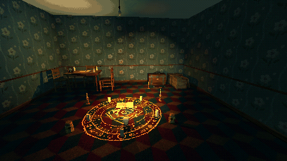
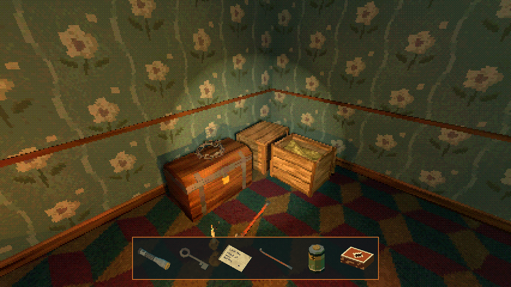

Tutorials › Make Pickups With Inventory Icons
How to Make Pickups With Inventory Icons in Godot 4
Pick items up with a look and a key, and show them in an inventory bar.

A small, complete pickup and inventory setup: the player keeps a list and answers two calls, add_item and has_item; a ray from the camera finds what the player looks at; and an inventory bar of 64 px icons redraws itself whenever the list changes.
Script: pickups_inventory.gd (MIT) · Godot 4.3 or newer · its folder on GitHub

How to use it
- Put
pickups_inventory.gdon the player's CharacterBody3D, with a child Camera3D namedCamera3Dand an HBoxContainer atHud/Bar(a CanvasLayer namedHudwith the bar in it). - Bind the key the player uses to the
ui_acceptaction, or change it in_unhandled_input. - A pickup is any node with an
interact(by)method that callsadd_itemon the player; a lock askshas_itembefore it opens.
What it needs
- Pickup scenes with
interact(by), and their icons.
Try it free
The Haunted PSX Free Sampler has 4 of the props as pickups (a candle, a doll, a key and a note) and 5 icons.
How it was tested
Checked with godot --headless --check-only in Godot 4.3 and 4.7.2.
The code
extends CharacterBody3D
## How to Make Pickups With Inventory Icons in Godot 4
## Cordatix Godot 4 PSX tutorials, MIT licensed: https://github.com/GoldenSparrow-Dev/cordatix-godot-psx-tutorials
## The devlog: https://cordatix.itch.io/haunted-psx-props/devlog/1719493/how-to-make-pickups-with-inventory-icons-in-godot-4-haunted-psx-props
signal inventory_changed
const REACH := 2.2
var inventory: Array = []
@onready var camera: Camera3D = $Camera3D
## The two methods every Haunted PSX pickup and locked scene asks a player for.
func add_item(id: String, item_name: String, icon: Texture2D) -> void:
inventory.append({"id": id, "name": item_name, "icon": icon})
inventory_changed.emit()
func has_item(id: String) -> bool:
for it in inventory:
if it["id"] == id:
return true
return false
func _ready() -> void:
inventory_changed.connect(fill_bar.bind($Hud/Bar)) # redraw the bar whenever the list changes
## What the player looks at: a ray from the eye that also meets the pickups' Area3D.
func look_target() -> Node:
var from := camera.global_position
var q := PhysicsRayQueryParameters3D.create(from, from - camera.global_transform.basis.z * REACH)
q.collide_with_areas = true
q.exclude = [get_rid()]
var hit := get_world_3d().direct_space_state.intersect_ray(q)
var n: Node = hit.get("collider") if hit else null
while n != null and not n.has_method("interact"):
var pk := n.get_node_or_null("Pickup")
if pk != null:
return pk
n = n.get_parent()
return n
func _unhandled_input(event: InputEvent) -> void:
if event.is_action_pressed("ui_accept"):
var t := look_target()
if t != null:
t.interact(self)
## An inventory bar: one TextureRect per item, nearest filtering so the PS1 icons stay crisp.
func fill_bar(bar: HBoxContainer) -> void:
for c in bar.get_children():
c.queue_free()
for it in inventory:
var t := TextureRect.new()
t.texture = it["icon"]
t.custom_minimum_size = Vector2(64, 64)
t.expand_mode = TextureRect.EXPAND_IGNORE_SIZE
t.texture_filter = CanvasItem.TEXTURE_FILTER_NEAREST
bar.add_child(t)
The devlog and the pack
The step-by-step walkthrough is the devlog How to Make Pickups With Inventory Icons in Godot 4 (Haunted PSX Props) on itch.io, written for Haunted PSX Props, a PS1-style asset pack by Cordatix for Godot 4, Unity, Unreal and Blender.